首页
上一页
11
12
13
14
15
16
16
17
18
19
20
21
下一页
末页
defanive2
无尽黑夜
14
对于天然洞穴来说,虽然也有y很低的,但是一般很少有可以直接从地表进入的入口,而且低y值的表面积一般也不大
624楼
2012-08-08 17:52
defanive2
无尽黑夜
14
天然洞穴采集矿物的一个优势就是不需要挖很多无用的石头,较为省力
625楼
2012-08-08 17:54
defanive2
无尽黑夜
14
总之,对于天然洞穴,开采铁矿和煤矿是很高效率的,而对于钻石的开采则较低效,因为有效表面积并不大
626楼
2012-08-08 17:55
defanive2
无尽黑夜
14
人工矿道则不同,自己进行矿物的搜索,往往用树型矿道结构,表面积非常大,,劣势在于需要挖一堆无用的石头和沙砾
627楼
2012-08-08 17:58
defanive2
无尽黑夜
14
人工矿道适合于收集钻石和红石等资源,而探索天然洞穴适合寻找铁和煤
628楼
2012-08-08 18:00
defanive2
无尽黑夜
14
关于矿物在不同y值上的分布,一个很常见的误区就是认为某种矿物的发现概率都是平均的,例如钻石在0-16生成,就认为0-16各层挖到钻石的几率都是等同的
629楼
2012-08-08 18:11
defanive2
无尽黑夜
14
但是实际上,由于矿物种类和世界生成器的不同,各层的概率是不同的,,一个最明显的例子,0-16层都会生成钻石,而很明显0层不会有钻石,和16层有钻石的几率不同
630楼
2012-08-08 18:14
defanive2
无尽黑夜
14
一个最常见的应用就是,在y=11层开人工矿道而不是10,原因是在10或以下世界生成器会随机生成岩浆,替换了原有的钻石,导致在10层以下发现钻石的概率降低
631楼
2012-08-08 18:16
defanive2
无尽黑夜
14
矿物分布图可以在英文wiki上找到,仔细研究一下,配合对世界生成器的了解,可以得出很多对挖矿有利的结论
632楼
2012-08-08 18:19
defanive2
无尽黑夜
14
今天来电真早，不过先去吃饭
635楼
2012-08-08 18:56
defanive2
无尽黑夜
14
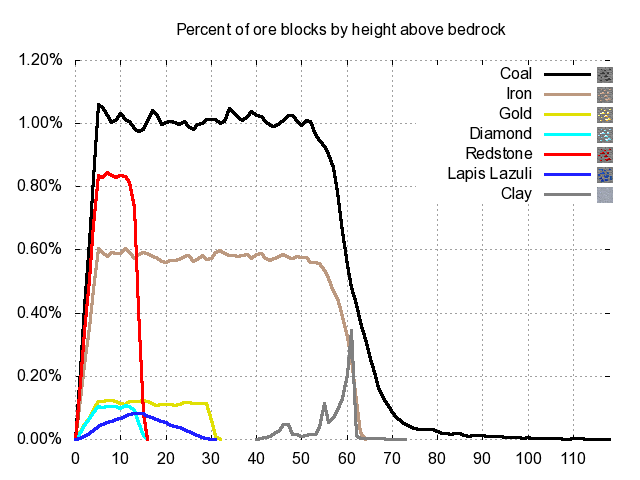
这张图就是矿物的y轴分布图
根据这个图可以对人工矿道的选址进行较好的设计，目标设定为需要的矿物
PS 如果仔细看大部分矿物，从y=10到y=11，是有明显的增加的
原因就在于10层以下开始有岩浆生成
638楼
2012-08-08 19:00
defanive2
无尽黑夜
14
另外有一个衡量人工矿道模式优劣的指标就是，可视体积/挖开体积
这个指数越大，表明挖同等体积的方块，可以探索到的矿物更多
不同的矿道模式这个指数的情况也不同
找到最好的矿道模式使得这个指数尽量的大，可以让挖矿效率提高很多
PS 当然这个也不是唯一指标，另外的因素包括亮度的保证，指标则是 需要光源数/挖开体积
还有安全性因素，例如垂直下挖实际上是可以达到很不错的探索指数，但是安全性欠佳
639楼
2012-08-08 19:05
defanive2
无尽黑夜
14
好了先去吃饭
为什么我现在要输验证码了，这不是坑爹吗
下午用了一会安卓的客户端之后就要输验证码了
求解，我擦，现在直播都麻烦了
640楼
2012-08-08 19:07
defanive2
无尽黑夜
14
吃饱回来，突然发现又不用验证码了！
继续直播
今天的短期目标是，把史莱姆工厂给做成自动的
目的就是，站在y=34的等待处，产物史莱姆球会收集上来
再次说明一下，一般生存对史莱姆球的需求并不大，这样做自动工厂没有必要
只是对于自己的挑战，第一次设计制作这种史莱姆的自动工厂
642楼
2012-08-08 19:42
defanive2
无尽黑夜
14
先出去跟爸妈走一下，晚点再回来玩
644楼
2012-08-08 19:52
defanive2
无尽黑夜
14
好了，回来了继续打MC
648楼
2012-08-08 20:47
defanive2
无尽黑夜
14
好了，在创造模式里面试验了一下我的设计
看起来很不错
清点了一下，大概需要19个牌子，13个围栏门，和19个半阶
准备切换到生存建造
649楼
2012-08-08 21:25
defanive2
无尽黑夜
14
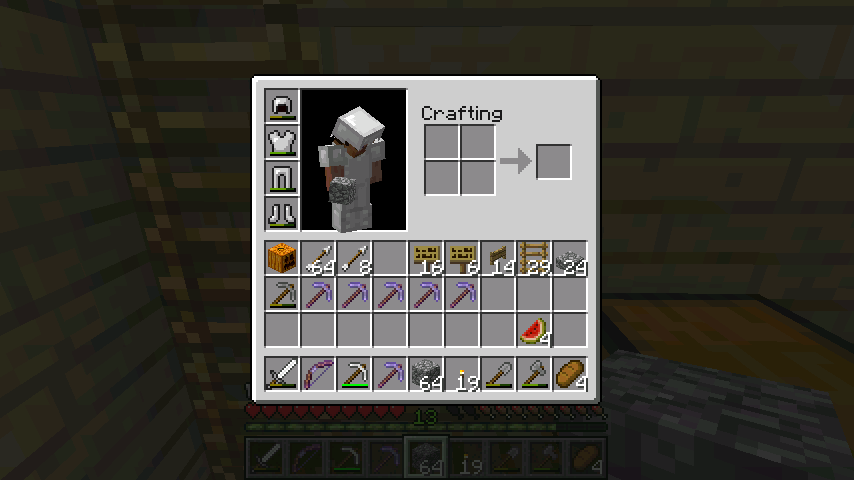
等有时间再解决直播器的cookie问题吧，现在很难用
手动直播一下
带齐装备和建材，准备出发
PS 真蛋疼差不多2组的木板又废了
650楼
2012-08-08 21:40
defanive2
无尽黑夜
14
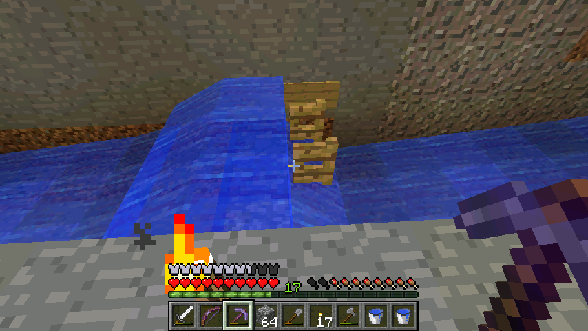
这个工程量实在不小啊，要把四周都挖出个3x2的沟壑来
然后水流运输所有史莱姆到集中点
这个是水流里经常用的一个设计，用于延长水流
653楼
2012-08-08 22:39
defanive2
无尽黑夜
14
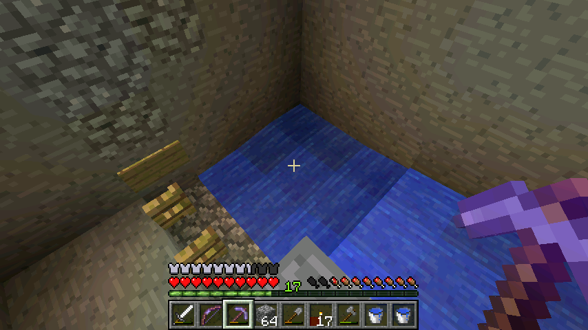
这个是转角处，很简单的下滑一格，然后再上升一格
654楼
2012-08-08 22:40
defanive2
无尽黑夜
14
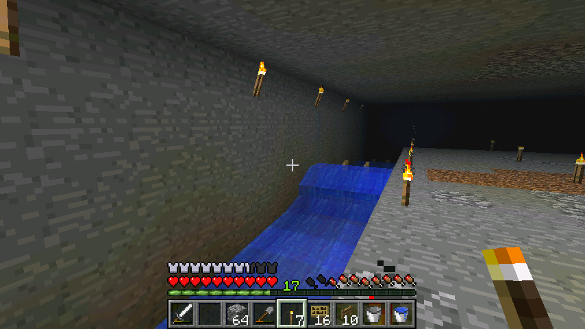
完成了一半的沟壑和水流铺设。。
工程量实在太大了，6个附魔石稿都用完了，回家补装备
655楼
2012-08-08 22:41
defanive2
无尽黑夜
14
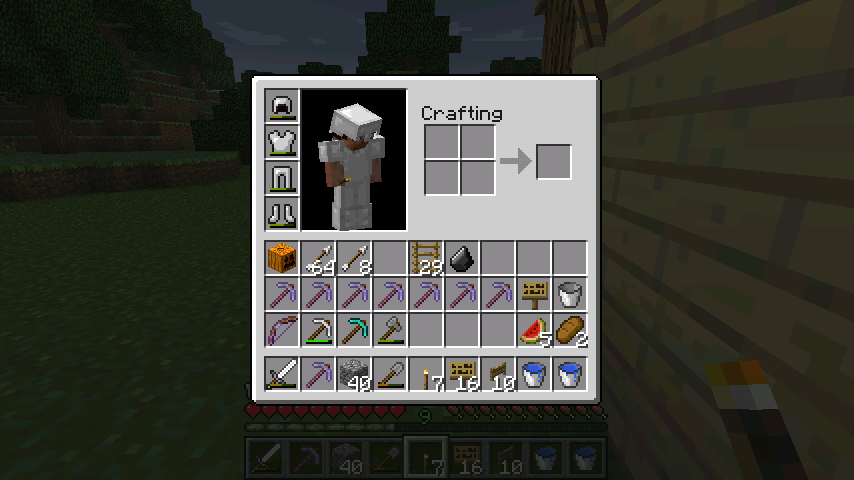
这次附魔了8个石稿，应该能够用了
加上造了一个新的钻石稿，因为有岩浆和水生成了黑曜石，要清理
晚点就把这个钻石稿给附魔了，希望能出silk touch
656楼
2012-08-08 22:42
defanive2
无尽黑夜
14
好了，继续我的工程
657楼
2012-08-08 22:43
defanive2
无尽黑夜
14
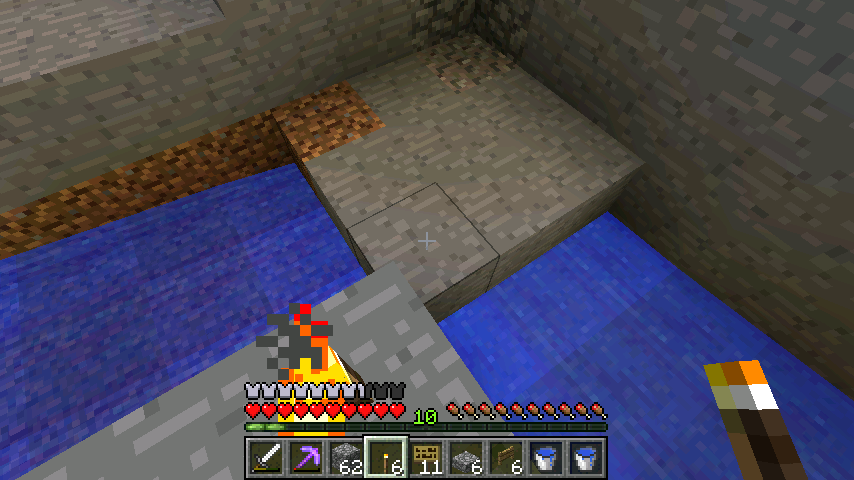
这里是汇合点
PS 刚刚网速爆慢于是就没更新了
658楼
2012-08-09 00:13
defanive2
无尽黑夜
14
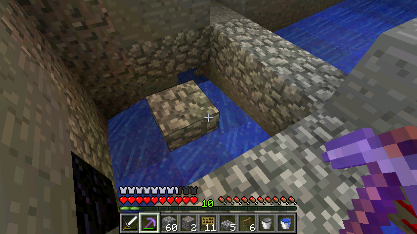
PS 汇合水流的石头都是应该去掉的
这个是淹死设计，大和中型的史莱姆就会被卡在半阶上，被淹死（水还没放）
小史莱姆则会掉到沟壑里面，被冲入上升楼梯
659楼
2012-08-09 00:16
defanive2
无尽黑夜
14
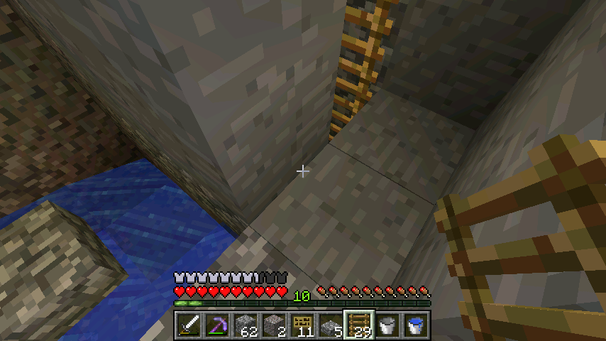
下面的通道通向右边的楼梯
660楼
2012-08-09 00:17
defanive2
无尽黑夜
14
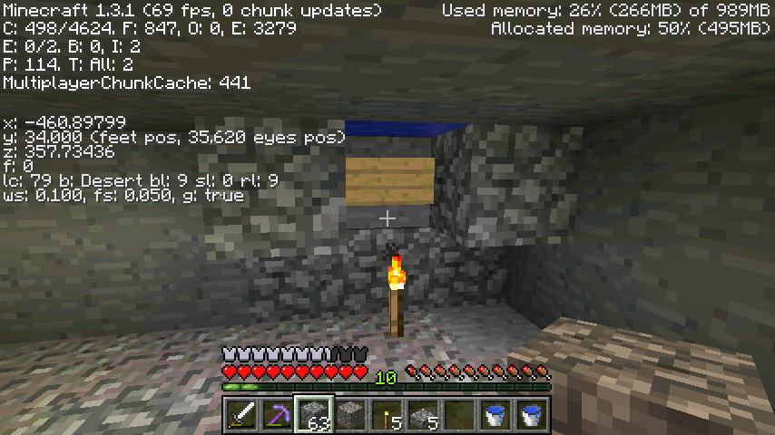
楼梯一直引史莱姆到等待点，这里就是出口
PS 最后会把牌子换成铁栅栏，这样史莱姆就会被淹死，而史莱姆球可以掉下来
661楼
2012-08-09 00:18
defanive2
无尽黑夜
14
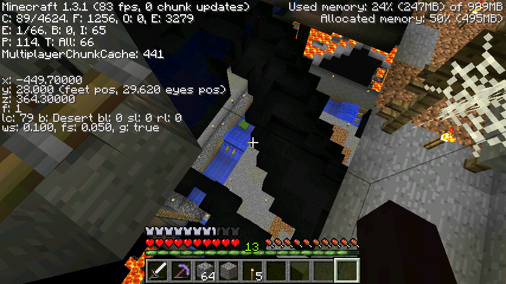
不过貌似等了很久都没动静，于是透视看了一下
发现一个中型史莱姆！
662楼
2012-08-09 00:19
defanive2
无尽黑夜
14
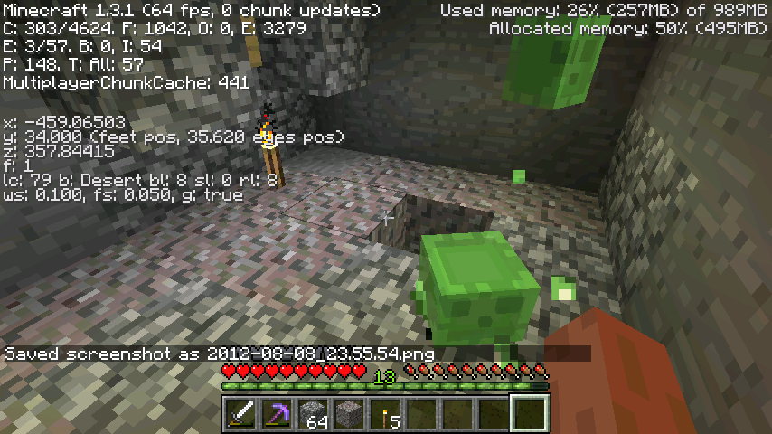
最后分裂了3个史莱姆出来，并且顺利的到了等待点
663楼
2012-08-09 00:20
defanive2
无尽黑夜
14
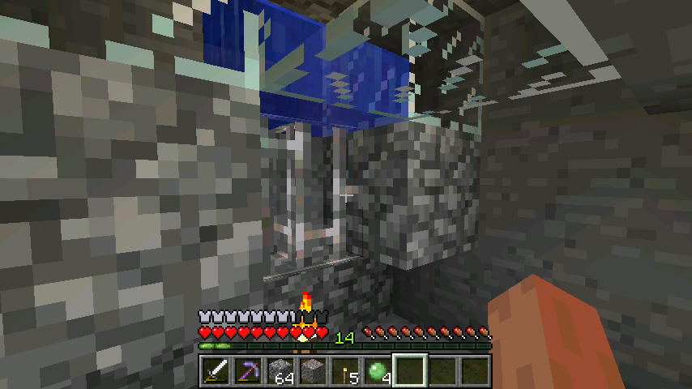
改造完成之后，就是这个样子了
664楼
2012-08-09 00:21
首页
上一页
11
12
13
14
15
16
16
17
18
19
20
21
下一页
末页